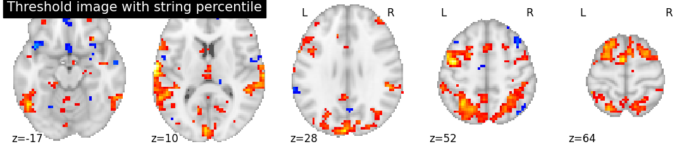
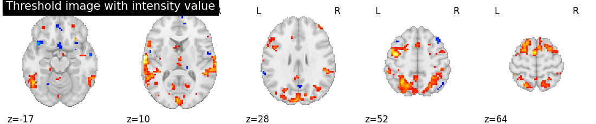
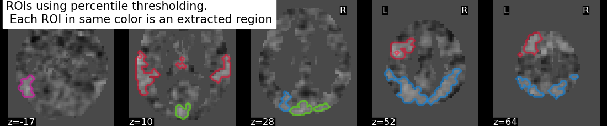
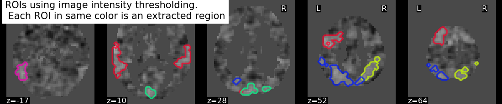

Note
Click here to download the full example code or to run this example in your browser via Binder
9.7.9. Region Extraction using a t-statistical map (3D)¶
This example shows how to extract regions or separate the regions from a statistical map.
We use localizer t-statistic maps from
nilearn.datasets.fetch_neurovault_auditory_computation_task
as an input image.
The idea is to threshold an image to get foreground objects using a
function nilearn.image.threshold_img and extract objects using a function
nilearn.regions.connected_regions.
Fetching t-statistic image of localizer constrasts by loading from datasets utilities
from nilearn import datasets
localizer = datasets.fetch_neurovault_auditory_computation_task()
tmap_filename = localizer.images[0]
Threshold the t-statistic image by importing threshold function
from nilearn.image import threshold_img
# Two types of strategies can be used from this threshold function
# Type 1: strategy used will be based on scoreatpercentile
threshold_percentile_img = threshold_img(tmap_filename, threshold='97%', copy=False)
# Type 2: threshold strategy used will be based on image intensity
# Here, threshold value should be within the limits i.e. less than max value.
threshold_value_img = threshold_img(tmap_filename, threshold=3.0, copy=False)
Visualization Showing thresholding results by importing plotting modules and its utilities
from nilearn import plotting
# Showing percentile threshold image
plotting.plot_stat_map(threshold_percentile_img, display_mode='z', cut_coords=5,
title='Threshold image with string percentile', colorbar=False)
# Showing intensity threshold image
plotting.plot_stat_map(threshold_value_img, display_mode='z', cut_coords=5,
title='Threshold image with intensity value', colorbar=False)
- 
- 
Out:
<nilearn.plotting.displays.ZSlicer object at 0x7f5db1d5b100>
Extracting the regions by importing connected regions function
from nilearn.regions import connected_regions
regions_percentile_img, index = connected_regions(threshold_percentile_img,
min_region_size=1500)
regions_value_img, index = connected_regions(threshold_value_img,
min_region_size=1500)
Visualizing region extraction results
title = ("ROIs using percentile thresholding. "
"\n Each ROI in same color is an extracted region")
plotting.plot_prob_atlas(regions_percentile_img, bg_img=tmap_filename,
view_type='contours', display_mode='z',
cut_coords=5, title=title)
title = ("ROIs using image intensity thresholding. "
"\n Each ROI in same color is an extracted region")
plotting.plot_prob_atlas(regions_value_img, bg_img=tmap_filename,
view_type='contours', display_mode='z',
cut_coords=5, title=title)
plotting.show()
- 
- 
Out:
/home/nicolas/GitRepos/nilearn-fork/nilearn/plotting/displays.py:101: UserWarning: No contour levels were found within the data range.
im = getattr(ax, type)(data_2d.copy(),
Total running time of the script: ( 0 minutes 4.162 seconds)